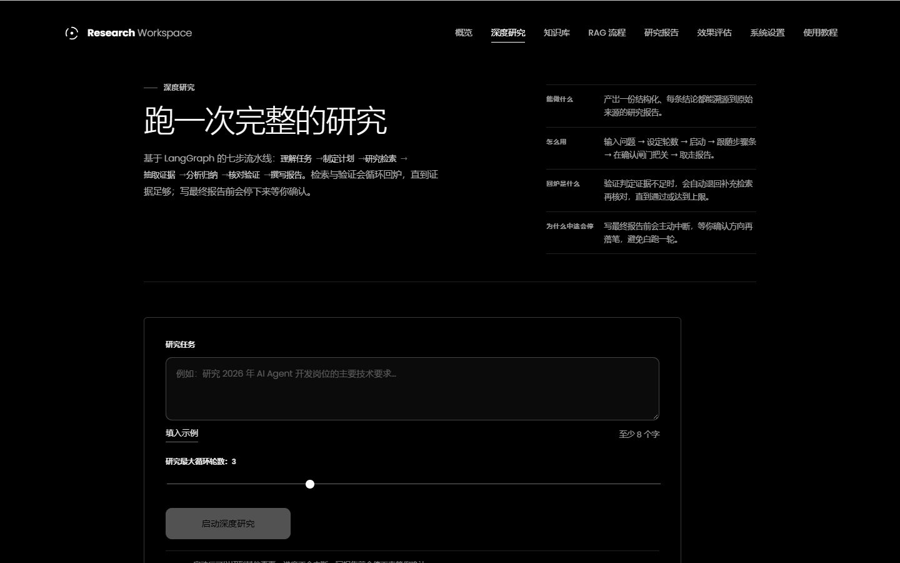
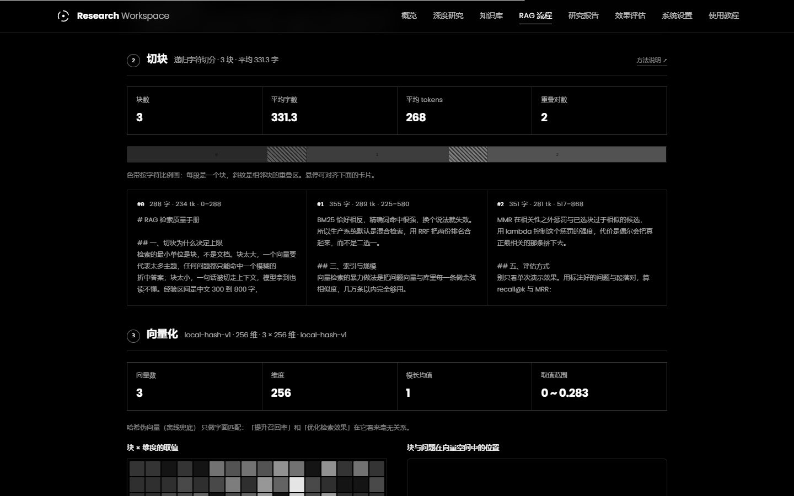

PROJECT SHOWCASE
AI Research Workspace
一个证据优先（Evidence-first）的 AI 研究工作台：输入复杂研究任务， LangGraph 工作流自动拆解目标、多轮检索取证、分析、验证—— 在写报告前中断等待人工确认，产出每条结论都标注证据编号、可溯源到原始来源的研究报告。
核心能力
七步研究流水线
理解任务 → 计划 → 检索 → 证据 → 分析 → 验证 → 报告；证据不足与验证不通过自动回炉，全程步数与预算有上限护栏。
人工确认闸门
写报告前强制中断（interrupt_before），等确认方向再落笔；终态不可复活，防止重复批准。
结论可溯源
报告结论挂证据编号，证据标注来源（知识库文档 / 网页）；一个引用都没标时自动写进局限说明。
过程全透明
时间线展示每步输入输出、工具调用台账、token 计量与每日预算；实时通道不可用时自动降级轮询。
RAG 实验台
检索链路五步可视化：切块边界、向量热力图、可旋转的三维向量空间、倒排索引面板、BM25 对比。
知识库可信度守卫
向量无语义能力时整体让位联网检索；语义引用设 0.65 相关度门槛，沾边片段不进依据来源。
界面


技术栈与规模
Python · FastAPI
LangGraph
SQLite
React 18
Vite 5
TypeScript
智谱 GLM-4-Flash
embedding-3 · 2048 维
Tavily
CDP 探针
7工作流节点
268后端测试全通过
1.38 万后端代码行数
6 个前端依赖
架构上的几个关键取舍
- 图编排而非线性链：「证据不够就再来一轮」的回环用条件边表达，中断恢复需要整份 State 可持久化——链式结构两者都做不好。
- 实时通道永远有轮询兜底：托管网关会缓冲 SSE（连响应头都不下发），事件按 id 增量拉取 + 快照定时回拉，任何网络环境下进度都自己往前走。
- 状态机靠显式业务标记：等待确认的判定来自业务标记而不是「图跑到哪了」，LangGraph 执行中途也会误判。
- 验证必须实际运行：一组零依赖 CDP 探针在真实浏览器里断言布局几何、双主题对比度、字体真实下载——截图目测不作为依据。
- 有意识划出去的范围：Multi-Agent、复杂记忆、并行检索都不做——7 个节点是同一 Agent 的阶段，拆开只增加消息传递成本，不增强「可溯源 / 可观察 / 可复核」。